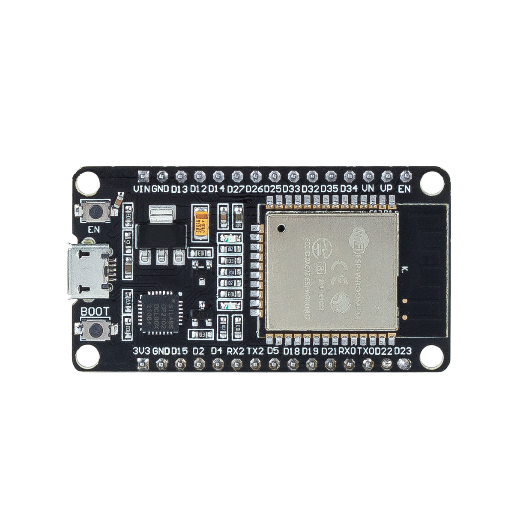

USB 연결 · 전원 + 데이터 통신
설명용 연결 개념도 · GPIO 배선 / 실제 실행 캡처가 아닙니다.
PC
Thonny
USB 포트
USB 데이터 케이블
명령 → 보드
← 출력 문자

ESP32 · 왼쪽 Micro-USB 단자
USB만 연결 · 외부 센서 없음 · GPIO에 5V 입력 금지
보드 사진: SunFounder SF019 / 별도 이미지 라이선스 미확인